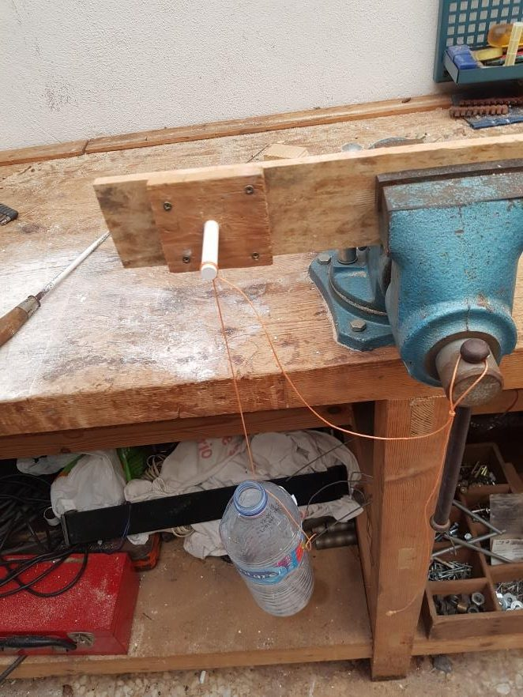
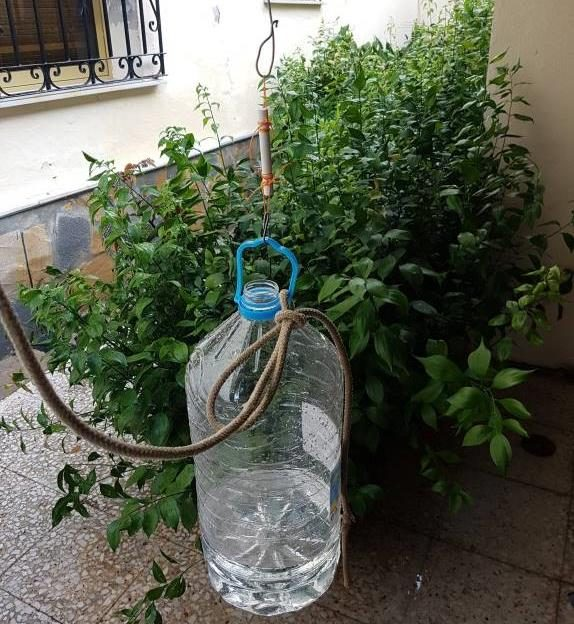
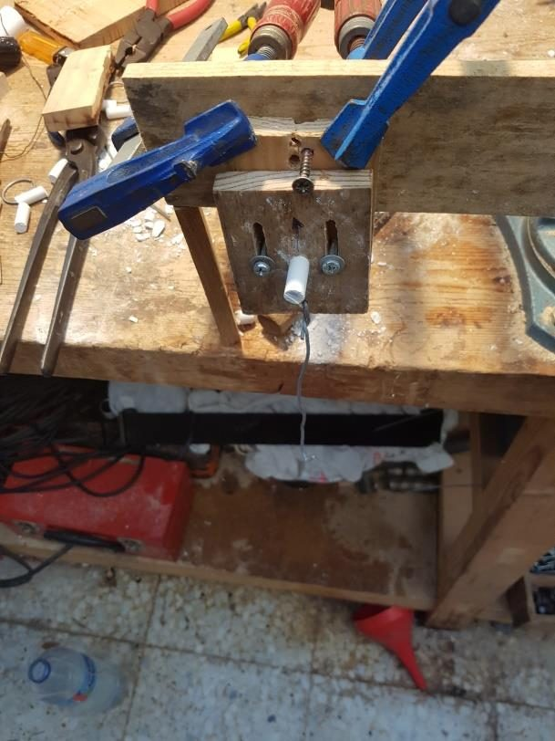
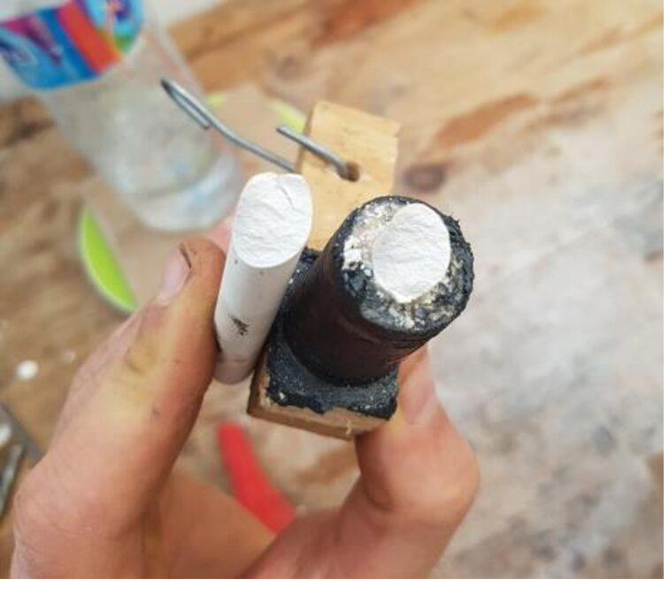

Projects
Five projects, from sketch to hardware.
Different domains, same approach: strip the problem to physics, explore real options, then build and test what matters.
01 · Consumer product · Team of five
Oyster microfibre filter
A washing-machine filter that captures clothing microfibres before they reach the ocean. From an open brief to a costed concept to a tested prototype.


The idea
Spin a cylindrical filter so the flow is driven outward through its whole wall. The filter area becomes the cylinder's surface, not the pipe's cross-section: far more area in the same space, and longer before it clogs.
Alejandro's part
Torque calculations, stress and fatigue FEA, the final mesh selection, prototype manufacturing and part of the concept sketching. Pump blades and the CFD study were led by teammates.
Result
On a repeat test run the printed shaft snapped exactly where the FEA had flagged. Cause: weak inter-layer shear from the print orientation. Fix: steel, a higher-modulus polymer, or an injection-moulded production part.
02 · Flight hardware · EuRoC 2021 · Technical lead
Darwin II airbrake
Active apogee control for a supersonic rocket: built to overshoot on purpose, then brake back to a 9 km target.

Two constraints
Symmetry. If one flap opens before another, the asymmetric force yaws the rocket at supersonic speed. Three identical flaps on one central gear-rack and one servo make that mechanically impossible.
Fail-safe. No supplier had a torsion spring of the right size, force and travel, so retraction moved to a redundant control board on its own power supply that drives the servo shut if the primary fails.
What happened
On the flight, the airbrake never deployed, and the mechanism wasn't the reason. The integrated control system was tested for the first time at the competition itself. The lesson we carry into every project: test the integrated system before it matters.
Alejandro's role
Technical lead of Endeavour, the University of Edinburgh student rocketry team (about 60 people). The airbrake was a team build.
03 · Test engineering · Solo project
Five test rigs for chalk
Measuring the failure strength of ordinary chalk in bending, tension, shear, torsion and compression, with no lab and no testing machine. Every rig was designed and built from workshop scrap.






The constraint
Each load had to be isolated cleanly, or the number would be meaningless. The first shear rig let the plate rotate and added friction to the reading; version 2 removed the parasitic moment.
The result
Consistent, physically sensible values on all five rigs, with the spread growing as the apparatus got more complex, exactly as expected. The real deliverable is the method: a defensible answer from improvised tools and clear reasoning.
Mean failure force per rig
Newtons · 3–4 tests per rig · hover or tab to a bar for the individual tests
Compression and tension load the same cross-section, so the almost 9× gap shows how much stronger chalk is in compression. Bending and torsion forces act through a lever arm, so those bars compare rigs, not materials.
04 · Concept & embodiment · Solo project
Seabed drilling rover
A tethered, remotely operated vehicle that drills the ocean floor: a novel machine with no off-the-shelf precedent to copy.

Architecture
A sealed chassis deployed by cable and winch, with the drill on silent-blocks like a car engine, isolating vibration and keeping the design modular.
Mobility
Four independent in-wheel motors and Mars-rover-style swing arms that adapt to uneven seabed and lock flat while drilling.
Materials
Ashby-chart selection against explicit objectives: leak-before-break for the chassis, hardness and corrosion resistance for the wheels, flexibility without failure for the arms.
05 · Thermal concept · Biomimicry · Solo project
Passive cooling from termite mounds
Termite-inspired cooling had only been used in large commercial buildings. The challenge: apply the same principles to an ordinary family house.

Start a project
Have a product to build?
Tell us what it is and where it stands today. We'll tell you honestly how we can help.